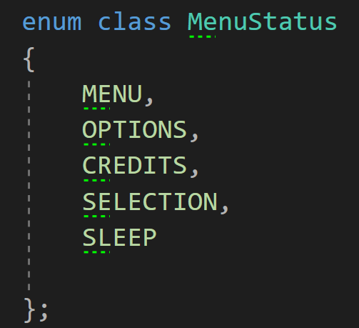
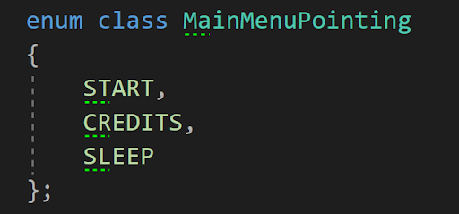
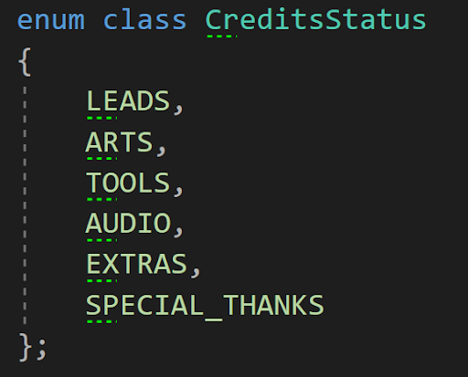
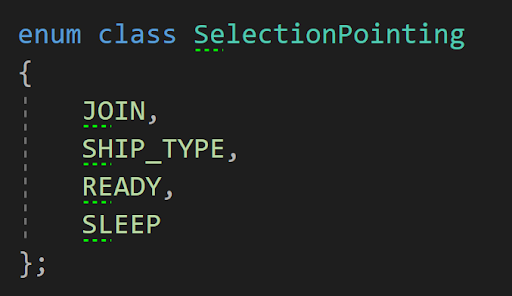
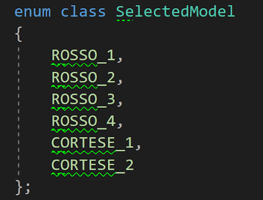

Menu & Game management for AerRacers
Context
We’ve worked on a video game project during our third year of bachelor at the SAE Institute
of Geneva in Games Programming. Our objective was to create a racing game for the
Nintendo switch, using a custom Game Engine in C++ that was developed by our teacher
and by us.
Our game named “AerRacers” is a multiplayer pod racing game, where the player can go
really fast, but has to control his speed to avoid crashing into walls which will cost him a lot
of time. The particularity of that video game is that the player can control each Rotor of the
spaceship with the joystick, and by doing this, he’ll control the speed of the Ship.
For this project, I was assigned as the Lead Project, the Lead Gameplay Programmer and
the Lead Game Designer. We had 5 months to create a game, we started on september
17th 2020 and the project ended on may 07th 2021.
Problem
In video games, it’s very important to manage your game status. That’s why video games have menus and often a game manager that manages it. In our game “AerRacers”, we have 2 different ship models each having a different texture. It was important for us to let the players choose their ship and to let them join the game before starting the game. It was also important to load the models selected by the player and to manage the game status to let the player win and then go back to the menu. To do so, I created a Menu Manager and a Game Manager
Menu Structure
The menu has several sections:
- The Main Menu: Where the player can look at the credits or start the game
- The Credits: Where the credits of each member from the team are displayed
- The Selection Screen: Where the players can join the game and select the skin of their spaceship
Selection Screen
The Selection Screen was an important part of the program because there’s a bunch of spaceship models & textures that were created by the Game Art Team for this project. It’s also there that the Game Manager gets the information of which ship model to load next, and of how many players will play.
Enum Classes
To update the state of the menu, I’ve created a bunch of enum classes:
- MenuStatus: Used to know in which parts of the menu the player is.
 - MainMenuPointer: Used to know which button from the menu is highlighted.
 - CreditsStatus: Used to know which page of the credits the player is looking at.
 - SelectionStatus: Used to know in which part of the selection every player are.
 - SelectedModel: Used to know which model the player has selected.

Loading the models and textures
In our game, we decided to load every texture and model at the start of the game using the other threads of the Nintendo Switch. We could do so because
we only have one level in our entire game. So while the player is in the main menu, the level scene loads in the other threads.
The thing is that by doing that, a problem occurred. Our level loaded faster than the main menu screen, and some chunks of the level were displayed before
the game manager, which could seem strange for the player. So we decided to reorganize our loading system loading them in a precise order.
There are three textures and models loading iterations in our game:
- Menu UI Loading
- Scene Models and Textures Loading
- Spaceships and InGame UI Loading
Every iteration is called when the previous one is finished, except for the third iteration that only loads if the game starts.
Game Manager
The game manager is used to manage the entire game. It updates the status of the current game, updates the UI in-game for each player, and checks which player has finished the game.
Game Manager Status
The Game Manager uses an enum class called GameState to know what’s the state of the game. There are 3 different states:
- Waiting: Countdown before the start of the game
- Racing: When the players are racing in our game
- End: Displays the end score and then load the main menu
To know if each player has finished the race, the Game Manager gets the information from the Waypoint Manager, which checks if the players have reached the end of the game.
Problems encountered
Keeping lazy work for later
A problem I met during the project was the fact that I wanted to get a working system the fastest possible and then switch to another system instead of using it to do the lazy work.
For example, when I was implementing the menus, the fun part for me was to create a working system the fastest possible and let the lazy work behind, like code polishing and writing
lazy texts like the credits.
With this behavior, some problems occurred:
- The code I wrote is working but isn’t clean
- The accumulation of missing lazy tasks cost me at the end more time to solve than if I did that work earlier
- Accumulating an unclean code + a lot of missing tasks creates a lot of organizational problems for the team and me
In the future, I’ll have to be careful about these mistakes I made during this project because they can cause a lot of trouble to me, and eventually the other team members.
What I learned
The development of the Menu and the Game Management wasn’t something really hard to implement. When you have a precise idea of what you’d like to do and how it’s not very hard to implement
a working system if the system is working correctly.
I learned that the harder part of programming is knowing what you do and organizing your code well, otherwise, you could get easily lost and in the end, lose more time than if you solved the
problems when they were fresh in your head.